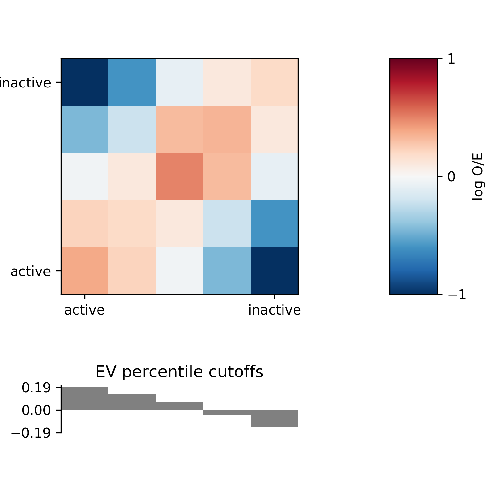

AB compartment analysis¶
Note
The following examples use the matrix files in FAN-C format. If you want to try the same
commands using Juicer .hic files, replace output/hic/binned/fanc_example_1mb.hic
with architecture/other-hic/fanc_example.juicer.hic@1mb. If you want to work with
Cooler files in this tutorial, use architecture/other-hic/fanc_example.mcool@1mb.
The results will be minimally different due to the “zooming” and balancing applied by
each package.
Regions in a Hi-C matrix can generally be assigned to either the active or the inactive compartment, also called ‘A’ and ‘B’ compartments, respectively.
usage: fanc compartments [-h] [-d DOMAINS] [-v EIGENVECTOR]
[-e ENRICHMENT_FILE] [-m MATRIX_FILE] [-g GENOME]
[-w] [-r REGION] [-i EIGENVECTOR_INDEX]
[-p PERCENTILES [PERCENTILES ...]] [-c COLORMAP]
[-s SYMMETRIC_AT] [--enrichment-min VMIN]
[--enrichment-max VMAX] [-G]
[-x EXCLUDE [EXCLUDE ...]]
[--compartment-strength COMPARTMENT_STRENGTH_FILE]
[-tmp] [-f] [--recalculate]
matrix [ab_compartments]
Positional Arguments¶
- matrix
Input matrix (Hi-C, fold-change map, …) or existing AB compartment matrix.
- ab_compartments
AB compartment matrix file.
Named Arguments¶
- -d, --domains
Write AB domains to this file. AB domains are output in BED format, and include the domains type (A/B) in the name field, and the eigenvector values (averaged across all bins in the domain) in the score field
- -v, --eigenvector
Write eigenvector values to this file.Output format is BED, containing of each matrix bin. The score field contains the eigenvector value of the bin.
- -e, --enrichment-profile
Plot AB enrichment profile to this file.
- -m, --enrichment-matrix
Path to save enrichment profile matrix (numpy txt format)
- -g, --genome
Genome file. Used to “orient” the eigenvector values (change sign) using the average GC content of domains. Possible input files are FASTA, folder with FASTA, comma-separated list of FASTA) used to change sign of eigenvector based on GC content.
- -w, --whole-genome
Calculate AB compartments on the whole genome matrix, instead of individual chromosomes. Only enable if you are sure your use-case requires it. This is likely to introduce artefacts when working with matrices that have been normalised per-chromosome.
- -r, --region
Only outputs domains / eigenvector values in this region. Only works with the -d and -e arguments. Compartmentalisation is always calculated on the whole genome.
- -i, --eigenvector-index
Eigenvector index. By default, the first eigenvector is output for eigenvector and domain analysis. Sometimes, it is useful to choose a higher eigenvector. E.g. for second eigenvector,specify “-i 2”.
- -p, --enrichment-percentiles
Percentiles to use for calculation of the enrichment profile. By default uses 20, 40, 60, 80, 100. The 0 percentile is included by default.
- -c, --enrichment-colormap
Matplotlib colormap to use for plotting the enrichment profile.
- -s, --enrichment-symmetric-at
Make enrichment profile plot symmetric around this value (e.g. use 0 to ensure that 0 is in the center of the plot).
- --enrichment-min
Minimum saturation value in enrichment profile. Default -1
- --enrichment-max
Maximum saturation value in enrichment profile. Default: 1
- -G, --only-gc
Only use GC content for enrichment profile calculation, not the correlation matrix eigenvector.
- -x, --enrichment-exclude
Chromosome names to exclude from enrichment profile calculation
- --compartment-strength
File for saving the compartment strength.
- -tmp, --work-in-tmp
Work in temporary directory
- -f, --force
Force overwriting of output files.
- --recalculate
Force recalculation of eigenvector even if a vector with the same parameters has previously been calculated.
Correlation matrix¶
Compartments are derived from a correlation matrix, in which each entry i, j corresponds to the Pearson correlation between row i and column j of the (Hi-C) matrix.
The fanc compartments command can produce a correlation matrix (AB compartment) object
from a FAN-C matrix file. Example:
fanc compartments output/hic/binned/fanc_example_1mb.hic architecture/compartments/fanc_example_1mb.ab
By default, compartment matrices are calculated on a per-chromosome basis, since each
chromosome might be normalised differently. To force the AB calculation on the whole genome,
use the -w option.
We can quickly plot the correlation matrix using the fancplot command:
fancplot -o architecture/compartments/fanc_example_1mb.ab.png chr18 \
-p square architecture/compartments/fanc_example_1mb.ab \
-vmin -0.75 -vmax 0.75 -c RdBu_r

AB Eigenvector¶
The eigenvector of the correlation matrix is used to derive compartment type and strength
for each matrix bin. Generally, regions with positive values are assigned the ‘A’,
regions with negative values the ‘B’ compartment. To calculate the eigenvector in addition
to the correlation matrix, simply add the -v <file_name> option to the previous command:
fanc compartments -v architecture/compartments/fanc_example_1mb.ev.txt \
output/hic/binned/fanc_example_1mb.hic \
architecture/compartments/fanc_example_1mb.ab
If architecture/compartments/fanc_example_1mb.ab already exists, it will not be recalculated
but the matrix is loaded from file. You can use the -f option to overwrite the existing file
in any case.
Alternatively, if you have already calculated the correlation matrix previously, simply run
fanc compartments -v architecture/compartments/fanc_example_1mb.ev.txt \
architecture/compartments/fanc_example_1mb.ab
Note that I have not specified an output file for the correlation matrix in this case.
We can plot the eigenvector using fancplot:
fancplot -o architecture/compartments/fanc_example_1mb.ab_and_ev.png chr18 \
-p square architecture/compartments/fanc_example_1mb.ab \
-vmin -0.75 -vmax 0.75 -c RdBu_r \
-p line architecture/compartments/fanc_example_1mb.ev.txt

fanc compartments outputs the first eigenvector by default. In some cases it might be
useful to choose a different eigenvector (sometimes the first eigenvector identifies
chromosomal arms rather than compartments). To change the eiegnvector use the --i option,
e.g. -i 2 for the second instead of the first correlation matrix eigenvector.
The sign of the eigenvector does not necessarily correspond well to the A or B compartment.
Often, the eigenvector is “flipped” (inverted signs on its entries). Mathematically, if x
is an eigenvector, so is -x. You can use external information to “orient” the eigenvector,
so that it most likely corresponds to the active and inactive compartments. Specifically,
you can supply a FASTA file with the genomic sequence to fanc compartments using the
-g <fasta_file> argument. This is generally a good idea: fanc compartments then
calculates the average GC content of regions with positive and those with negative eigenvector
entries. As GC content has previously been shown to correlate well with compartmentalisation,
the eigenvector is oriented in such a way that negative entries correspond to ‘B’ (low GC
content) and positive entries to ‘A’ (high GC content).
fanc compartments -g hg19_chr18_19.fa -v architecture/compartments/fanc_example_1mb.ev_gc.txt \
architecture/compartments/fanc_example_1mb.ab
AB domains¶
Consecutive matrix bins with the same eigenvector sign are considered part of a “domain”.
You can use the -d <domain_file> option to write the AB domains to a BED file:
fanc compartments -d architecture/compartments/fanc_example_1mb.domains.bed \
architecture/compartments/fanc_example_1mb.ab
Again, it is recommended to supply the genome for a better assignment of ‘A’ and ‘B’ to each domain:
fanc compartments -g hg19_chr18_19.fa \
-d architecture/compartments/fanc_example_1mb.domains_gc.bed \
architecture/compartments/fanc_example_1mb.ab
The domains BED file merges all consecutive bins in the same domain, which is why A and B are always alternating. It contains the domain type in the “name” field and the average eigenvector entry values of all bins in the domain in the “score” field:
chr18 1 3000000 B -0.08663299058874448 .
chr18 3000001 4000000 A 0.09744158387184143 .
chr18 4000001 6000000 B -0.1033548042178154 .
chr18 6000001 14000000 A 0.11616017390042543 .
chr18 14000001 16000000 B -0.08352501317858696 .
chr18 16000001 24000000 A 0.08437945414334536 .
chr18 24000001 33000000 B -0.10840386855933401 .
chr18 33000001 34000000 A 0.06491707265377045 .
chr18 34000001 43000000 B -0.12647992662257618 .
chr18 43000001 49000000 A 0.09771443787030876 .
...
AB enrichment profiles¶
The compartmentalisation of a genome can be visualised in an enrichment profile plot. This will divide bins into percentiles using the associated eigenvector values, and then the average observed/expected (O/E) values of contacts in each pair of percentile bins is calculated and plotted.
Use the -e <plot_file> option to generate this plot. You can also use the
-m <matrix_file> option to output the enrichment matrix values to file for further
analysis.
fanc compartments -e architecture/compartments/fanc_example_1mb.ab_profile.png \
output/hic/binned/fanc_example_1mb.hic \
architecture/compartments/fanc_example_1mb.ab
Note that for the enrichment plot you will also need to provide the Hi-C matrix file for
enrichment calculation. If the AB compartment matrix already exists at the output location,
it will not be overwritten unless you are using the -f option.
As with the above commands, it is highly recommended to supply a genome file to properly orient the eigenvector:
fanc compartments -g hg19_chr18_19.fa \
-e architecture/compartments/fanc_example_1mb.ab_profile.png \
output/hic/binned/fanc_example_1mb.hic \
architecture/compartments/fanc_example_1mb.ab
This is what the plot looks like for the example:
You can customise the enrichment analysis using additional parameters. By default, the
percentiles for eigenvector binning are chosen at 20, 40, 60, 80, and 100. To choose a
finer binning, for example, you can use -p 10 20 30 40 50 60 70 80 90 100. The “0”
percentile is always added automatically. The eigenvector values are not necessarily
centred around 0, which can lead to some unexpected enrichment plots. To force the central
enrichment matrix bin to 0, and perform separate percentile calculations for values < 0 and
>= 0, use the -s 0 option. Note, however, that this will lead to differences in the
number of bins plotted on the left and right side of the matrix.

To format the plot, you can choose a different colormap with -c <cmap>. See
here for colormap
options. You can set the colorbar scale with --enrichment-min <n> and
--enrichment-max <n>, where n is -1 and 1, respectively.